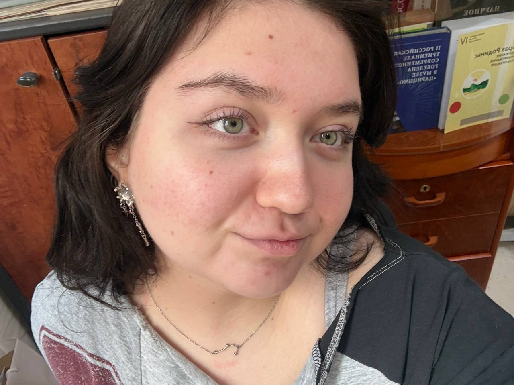

Зарисовки
творческой жизни.
Первый номер «Этюда» — о событиях, людях, выставках и планах, которые объединяют наше сообщество.
Зачем нужен
«Этюд»?
Привет! Я Даниэль, секретарь кафедры художественных дисциплин. Вместе с МХПИ мы решили выпустить журнал о студенческой жизни.
Главная идея «Этюда» — сделать жизнь института и колледжа ближе и понятнее. Здесь можно узнавать о событиях, знакомиться с людьми, делиться впечатлениями и находить возможности для участия. Нам хочется создать дружелюбную атмосферу, в которой учиться, предлагать идеи и просить о помощи становится комфортнее.


События.
Где мы были, что увидели и что успели создать вместе.
Пленэр на матче «Спартака»
2 сентября 2026Когда спорт становится поводом для творчества.
Наши студентки делали зарисовки прямо во время матча. А Дарья Баринова не только участвовала в пленэре, но и дала интервью и вышла в прямой эфир. Больше — в нашем Telegram.
Большой пленэр в Царицыно
13 сентября 2026День на свежем воздухе, полный зарисовок и общения.
Многие наши студенты отправились на совместный пленэр и провели день на свежем воздухе за работой и общением. Руководили поездкой заведующая кафедрой Раушания Исламовна и профессор кафедры Игорь Геннадьевич.
Выставка к 95-летию Софьи Губайдулиной
Октябрь 2026Студенческие работы в Казани.
Наши студентки приняли участие в выставке, посвящённой 95-летию Софьи Губайдулиной, и представили собственные работы. Выставка прошла в Казани и получила тёплые отзывы посетителей.
Большая выставка в Гоголь АРТ
19–28 ноября 2026Работы студентов и абитуриентов на одной площадке.
В экспозиции представлены работы разных кафедр, в том числе нашей. Мы отобрали лучшие работы студентов и абитуриентов, которые сейчас занимаются на подготовительных курсах. 22 ноября прошла церемония награждения студентов, чьи работы были представлены на выставке.
Какие у нас планы?
Что нас ждёт и в чём уже скоро можно будет поучаствовать?
Вечер набросков · 4 декабря
Встречаемся на вечере набросков в балетной эстетике: движение, пластика, выразительные позы и быстрые зарисовки. Это возможность попробовать себя в рисунке с натуры, понаблюдать за движением и провести вечер в творческой компании. Следите за анонсами — будем рады участникам.
Япония · май 2027
Планируем творческую поездку в Японию. Сначала нас ждёт Гуанчжоу — знакомство с китайской культурой. Затем Киото, где будем вдохновляться японской архитектурой и атмосферой, а после отправимся в Нару на пленэр среди знаменитых оленей. В планах также Токио — и, конечно, шоппинг — а завершится путешествие в Камакуре мастер-классами. Подробности маршрута появятся в Telegram.
Следить за новостямиНовые выставки
Мы не собираемся останавливаться: впереди новые экспозиции, показы и поводы увидеть студенческие работы за пределами учебных аудиторий. Хотите выставить свою работу, помочь с монтажом или попробовать себя в организации? Приходите — место найдётся не только авторам, но и тем, кто помогает идеям становиться реальностью.
Новые проекты
Есть идеи, которые пока только обретают форму. Будем постепенно рассказывать о них в следующих выпусках — если поддержите «Этюд», вместе сможем сделать ещё больше.
Этюд продолжается
благодаря вам.
Поддержи проект, если тебе было интересно читать этот выпуск или ты хочешь, чтобы новые истории выходили дальше. Нам важно знать, что мы делаем это не зря.
Один голос на устройство — но мнение каждого важно.